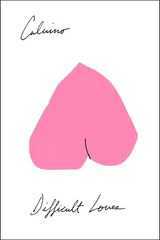

Difficult Loves
Gli amori difficili
I'm starting to get into the confusing bit of my project here; several of the stories in Difficult Loves appeared in other collections ("Smog" and "The Argentine Ant" in The Watcher and Other Stories, "The Adventures of a Motorist" in t zero as "The Night Driver," and "The Adventures of a Soldier" in Last Comes the Raven). Add to that: these stories were all apparently written in the 1950s, predating Calvino's turn to the fantastic with the Our Ancestors books. The end result is mild whiplash; both the subject matter and the style differ substantially from the last things I read.
That said, it's a nice reminder of Calvino's evolution of theme. The focus on embodied people and their (mostly short-lived) relationships is almost absent once we hit Cosmicomics (despite the occasional gestures in that direction with Qfwfq's various partners). There are hints of the headier, more philosophical ideas that Calvino explored later here, but these are mostly realistic stories about people, ricocheting through life, intersecting or not, even when those ideas are in the background.
To call out two stories: "The Adventure of the Clerk" is the less ambitious of these, exploring how much of your identity might be constructed by your understanding of others' opinions of you, and how susceptible it is to regression to the mean. The clerk sets out in the morning thinking he's a new man, only to submit his way back to his former life as he speculates how the others on the morning train see him and how his coworkers continue to treat him the same as they ever have.
And "The Adventure of the Photographer" is almost all ideas; the love exhibited is towards the idea of and what is enabled by photography. It's obsessive, to the extent that the photographer drives away the partner he ended up with because of photography. There's also something here relevant to our current micro-fame, Instagram- and TikTok-driven culture, where something Only Matters if it's recorded, and real people have taken that to its logical conclusion, recording every moment (to the oft-parodied extent of ignoring their presence in the moment in favor of making sure they've got their phone at the right angle)